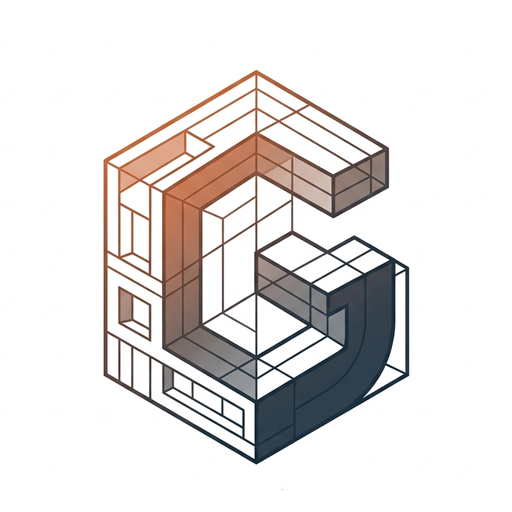

Desain arsitektur
Pengembangan konsep dan rancangan untuk hunian serta ruang skala kecil-menengah.

GradiEntIndependent practiceGradiEnt Studio adalah praktik arsitektur dan desain spasial yang bekerja dari konteks tapak, iklim, dan kebutuhan penghuninya.
Dari pembacaan tapak hingga pengembangan desain, setiap keputusan dihubungkan kembali dengan kebutuhan proyek.
Pengembangan konsep dan rancangan untuk hunian serta ruang skala kecil-menengah.
Studi orientasi, cahaya alami, naungan, dan kondisi lingkungan sebagai dasar keputusan desain.
Eksplorasi bentuk, sistem parametrik, dan dokumentasi digital yang mendukung proses perancangan.
Setiap tapak punya pola cahaya, udara, batas, dan aktivitas yang berbeda. Proses desain dimulai dengan memahami hal-hal tersebut, lalu menyusunnya menjadi ruang yang jelas dan berguna.
Untuk konsultasi arsitektur, analisis tapak, atau kolaborasi desain, hubungi GradiEnt Studio melalui kanal berikut.